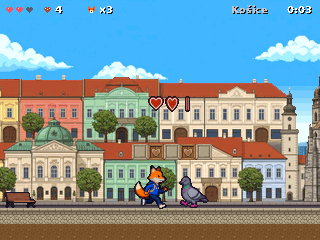
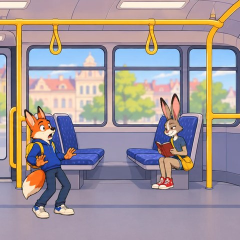

Zajko
Choisis ton jeu
Slovingo · 16 bit
1 joueur
Zajko Run

Plateformes
Košice → Tatry
▶ Jouer
Zajko Quest

Zajko Quest
Point & click · 32 bit
Nouveau
Aventure &
cours de slovaque
▶ Jouer
← Retour au cours
Zajko Run : version web du jeu ESP32 / Odroid-Go (dossier
esp32/
). Zajko Quest : en cours (ouverture, gare, tram, rue refaits).